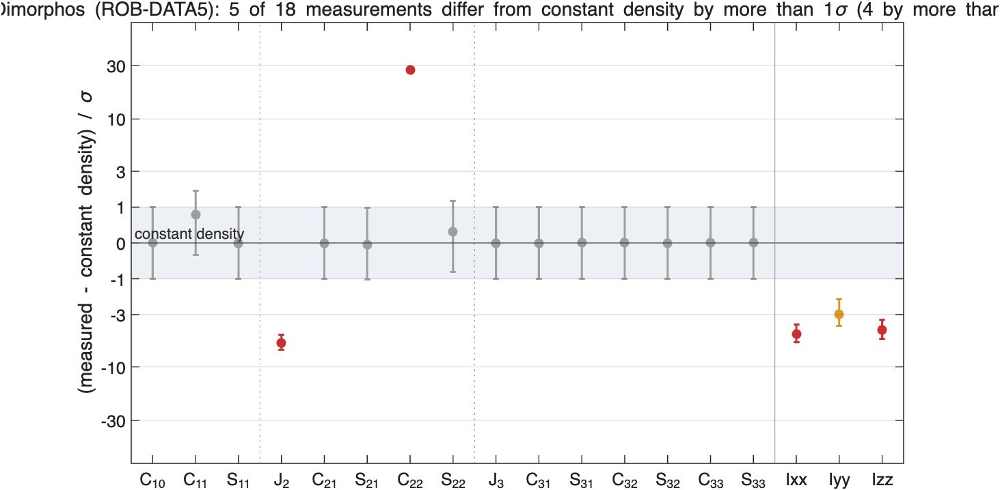
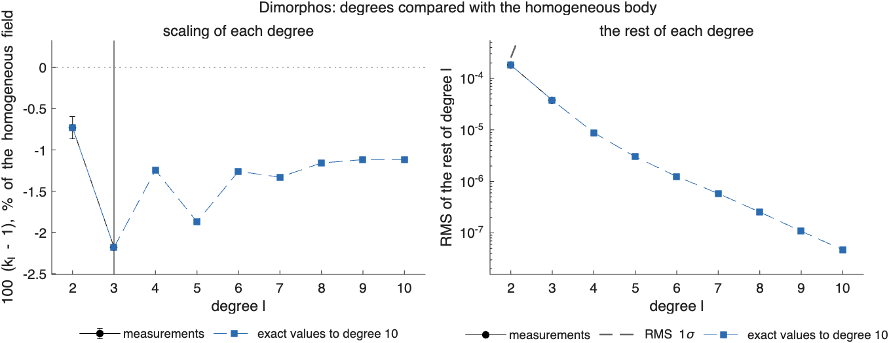
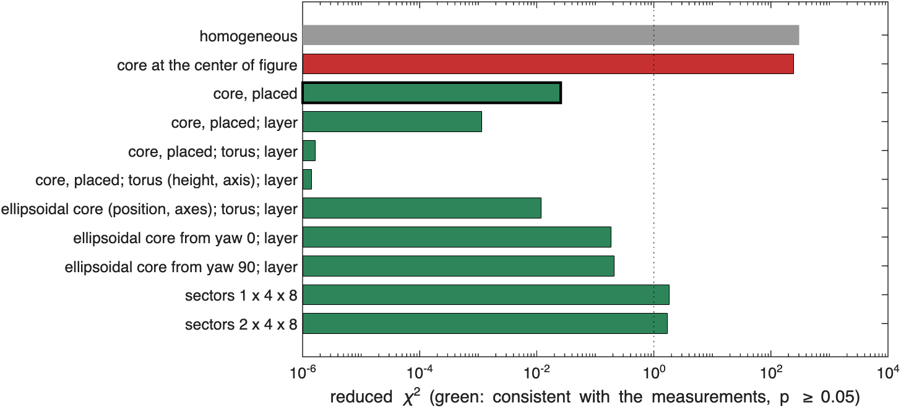
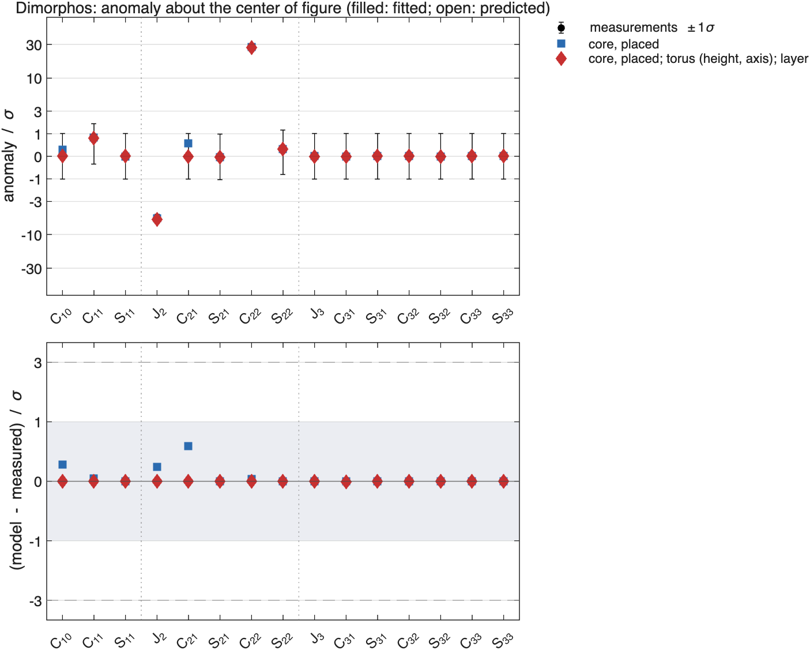
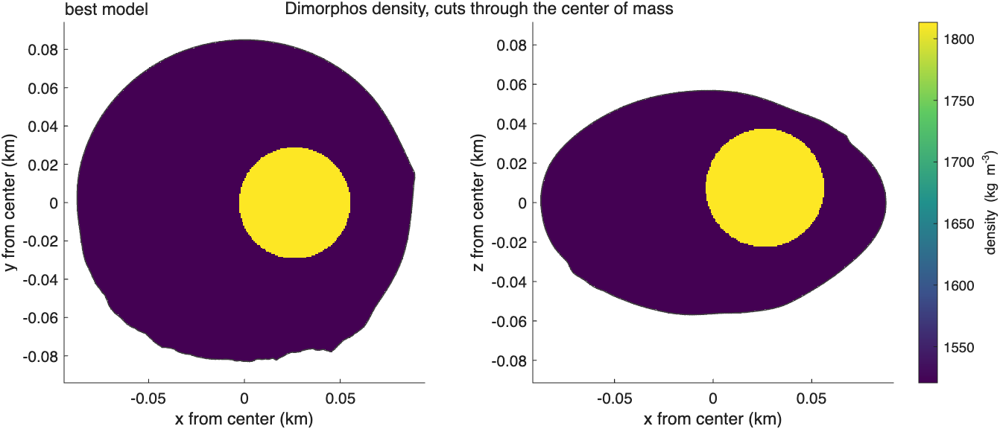
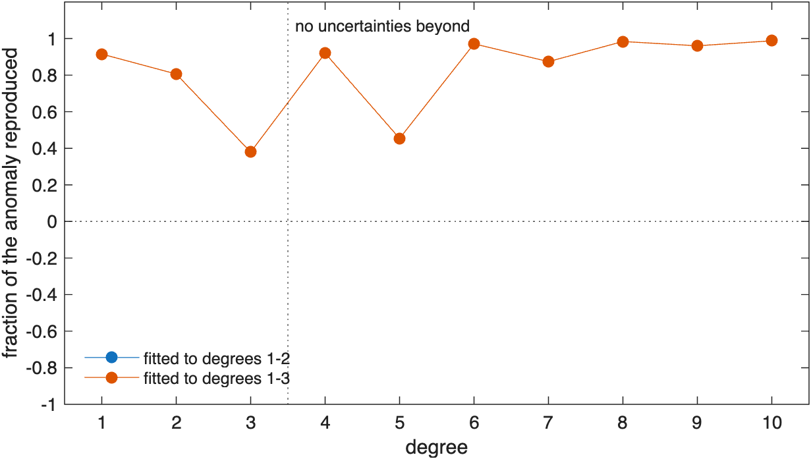
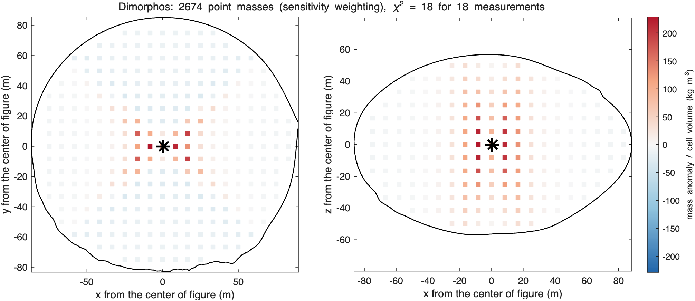
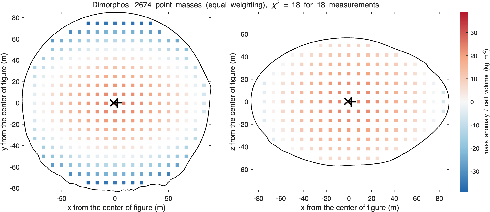

ROB-DATA5: Dimorphos#
Last edited October 27, 2026
Result. The simplest Dimorphos package: one sphere about 300 kg/m³ denser than the background, 27 m from the center of figure toward +x, explains the coefficients and the inertia (reduced 0.03) and predicts the surface acceleration at the lander point to 0.2%. It also reproduces 38–99% of the anomaly of every degree up to 10 of the exact values, far beyond the degree 2 the radio-science precision resolves. The anomaly is small: only 5 of the 18 measurements differ from constant density by more than 1σ. The package's mass corresponds to 1539 kg/m³.
Reading#

Dimorphos (ROB-DATA5): anomaly about the center of figure, degrees 1 to 3
center of mass - center of figure: [0.31 -0.00 0.00] m +- [0.43 0.59 0.42] m, |offset| 0.31 m
chi-square of the offset: 0.5436 for 3 degrees of freedom
degree RMS anomaly RMS 1-sigma ratio k_l +- 1-sigma residual chi2 / dof
1 1.164e-03 3.097e-03
2 2.372e-04 2.511e-04 0.99273 +- 0.00135 876.2 / 4
3 4.240e-05 2.677e-02 0.97819 +- 10.02662 1.804e-05 / 6
one compact mass with the same degrees 1 and 2: NaN% +- NaN% of the mass (NaN kg) at [NaN NaN NaN] m +- [NaN NaN NaN] m from the center of figure
(not converged: the central mass is not distinguished from 0, or no single compact mass fits)- At the Hera radio-science precision for Dimorphos, degree 1 (the center of mass, to about 0.5 m) and degree 3 (to about 10⁻²) carry no information: the measurements are degree 2 and the three inertia elements.
- Degree 2 is scaled by −0.7% (a small central condensation), and its rest is mostly : 27σ larger than the homogeneous value, the elongation of the body along its long axis enhanced.
- The three moments of inertia are 3–5σ smaller than the homogeneous body's: mass slightly toward the center.
- No compact mass converges from degrees 1 and 2 alone: the center-of-mass offset (0.3 m) is not distinguished from 0 at this precision.

Models#

model chi2/nu p params components (relative density +- 1 sigma, kg/m^3; centers from the center of figure, m)
homogeneous 304 0 0.0 background 1539
core at the center of figure 246 0 1.0 background 1581 | core -644 +- 18 at [0 0 0]
core, placed 0.0257 1 4.0 background 1521 | core +293 +- 25 at [27 -0 7]
core, placed; layer 0.00115 1 5.0 background 1510 | core +357 +- 74 at [25 -0 0] | regolith +80 +- 98
core, placed; torus; layer 1.63e-06 1 6.0 background 1523 | core +273 +- 657 at [28 0 0] | torus -14 +- 109 at [0 0 0] | regolith +3 +- 609
core, placed; torus (height, axis); layer 1.44e-06 1 9.0 background 1523 | core +273 +- 708 at [28 0 0] | torus -14 +- 254 at [0 0 1] | regolith +3 +- 864
ellipsoidal core (position, axes); torus; layer 0.0118 1 9.0 background 1658 | core -635 +- 405 at [-7 1 -0] | torus -96 +- 33 at [0 0 0] | regolith -802 +- 358
ellipsoidal core from yaw 0; layer 0.187 1 8.0 background 1499 | core +419 +- 180 at [-16 0 0] | regolith +160 +- 201
ellipsoidal core from yaw 90; layer 0.212 1 8.0 background 1569 | core -86 +- 145 at [-1 44 -1] | regolith -286 +- 148
sectors 1 x 4 x 8 1.84 0.05 8.3 background 1539 | s111 -172 +- 501 | s112 -68 +- 505 | s113 -88 +- 505 | s114 -78 +- 505 | s115 +131 +- 508 | s116 +171 +- 509 | s117 +115 +- 508 | s118 +28 +- 506 | s121 -319 +- 365 | s122 +346 +- 376 | s123 +81 +- 386 | s124 -486 +- 344 | s125 +882 +- 358 | s126 -553 +- 371 | s127 +183 +- 385 | s128 +49 +- 373 | s131 -101 +- 372 | s132 -73 +- 387 | s133 -25 +- 375 | s134 +75 +- 376 | s135 -47 +- 375 | s136 -85 +- 379 | s137 +35 +- 381 | s138 +50 +- 373 | s141 -66 +- 504 | s142 -11 +- 506 | s143 +36 +- 507 | s144 +372 +- 506 | s145 +185 +- 507 | s146 -46 +- 506 | s147 -13 +- 506 | s148 +2 +- 505
sectors 2 x 4 x 8 1.7 0.05 4.3 background 1539 | s111 +6 +- 41 | s112 +6 +- 41 | s113 +6 +- 41 | s114 +6 +- 41 | s115 +6 +- 41 | s116 +6 +- 41 | s117 +6 +- 41 | s118 +6 +- 41 | s121 +29 +- 40 | s122 +26 +- 40 | s123 +27 +- 40 | s124 +29 +- 40 | s125 +26 +- 40 | s126 +27 +- 40 | s127 +27 +- 40 | s128 +29 +- 40 | s131 +28 +- 40 | s132 +27 +- 40 | s133 +27 +- 40 | s134 +28 +- 40 | s135 +28 +- 40 | s136 +27 +- 40 | s137 +27 +- 40 | s138 +28 +- 40 | s141 +6 +- 41 | s142 +6 +- 41 | s143 +6 +- 41 | s144 +6 +- 41 | s145 +6 +- 41 | s146 +6 +- 41 | s147 +6 +- 41 | s148 +6 +- 41 | s211 +18 +- 39 | s212 +17 +- 40 | s213 +17 +- 40 | s214 +18 +- 40 | s215 +19 +- 40 | s216 +18 +- 40 | s217 +17 +- 40 | s218 +18 +- 40 | s221 -10 +- 35 | s222 -13 +- 35 | s223 -13 +- 35 | s224 +1 +- 35 | s225 +13 +- 36 | s226 -14 +- 35 | s227 -16 +- 35 | s228 -5 +- 35 | s231 -8 +- 35 | s232 -15 +- 35 | s233 -15 +- 35 | s234 +7 +- 35 | s235 +4 +- 35 | s236 -15 +- 35 | s237 -17 +- 35 | s238 -6 +- 35 | s241 +18 +- 40 | s242 +17 +- 40 | s243 +18 +- 40 | s244 +19 +- 40 | s245 +19 +- 40 | s246 +17 +- 40 | s247 +17 +- 40 | s248 +18 +- 40
best: core, placed- One sphere placed by its profile (+293 ± 25 kg/m³ at 27 m toward +x): reduced 0.03, the model with the fewest parameters that is consistent. A sphere along the long axis raises and moves the center of mass toward +x.
- Adding a layer, a torus, or making the core an ellipsoid fits as well and does not change the sphere: the layer, torus and ellipsoid densities are all within 1–2σ of 0.
- A core at the center of figure cannot (246): the mass excess must be off center along x.


How far the model reaches#
fitted to chi2/nu chi2/n fitted chi2/n others
degrees 1-2 0.0514 0.0327 1.64e-06
degrees 1-3 0.0257 0.02 -
Fraction of each degree's anomaly (exact values) reproduced, 1 - |model - given|^2/|given|^2:
fitted to 1 2 3 4 5 6 7 8 9 10
degrees 1-2 0.92 0.81 0.38 0.92 0.45 0.97 0.87 0.98 0.96 0.99
degrees 1-3 0.92 0.81 0.38 0.92 0.45 0.97 0.87 0.98 0.96 0.99
With only degree 2 resolved, the truncation test is short: the sphere fitted to degrees 1–2 predicts degree 3 within its (large) uncertainties. The exact values tell more: the same sphere reproduces 92% of degree 4, 97% of degree 6, and 87–99% of degrees 7–10, although it was fitted to degree 2 and the inertia only. A compact dense body in a homogeneous body is the whole story at every scale the coefficients see; if the package were measured to degree 10, the model would not have to be truncated.
Point masses#


equal weighting: 2674 points every 8.3 m, lambda 3.64e-08, chi2 18 for 18 measurements; positive 8.61e+06 kg at [2 0 -0] m, negative -8.61e+06 kg at [-1 0 0] m
sensitivity weighting: 2674 points every 8.3 m, lambda 54.9, chi2 18 for 18 measurements; positive 1.54e+07 kg at [0 -0 -0] m, negative -1.54e+07 kg at [1 -0 0] mThe point masses spread a small excess toward the center and along +x: with 18 measurements and a weak anomaly they give the smoothest field that fits, which a single offset sphere matches.
Surface point#
surface point [85.4 7.5 12.0] m; models consistent with the coefficients and inertia
U (m^2/s^2) |a| (m/s^2) |a| vs % angle deg
given 2.232206e-03 3.031167e-05 0.000 0.000
homogeneous 2.223924e-03 3.011989e-05 -0.633 0.099
2 core, placed 2.234276e-03 3.036714e-05 0.183 0.127
3 core, placed; layer 2.234439e-03 3.036069e-05 0.162 0.022
4 core, placed; torus; layer 2.233212e-03 3.034097e-05 0.097 0.013
5 core, placed; torus (height, axis); layer 2.233198e-03 3.033835e-05 0.088 0.013
6 ellipsoidal core (position, axes); torus; layer 2.227058e-03 3.023473e-05 -0.254 0.183
7 ellipsoidal core from yaw 0; layer 2.218248e-03 2.994379e-05 -1.214 0.076
8 ellipsoidal core from yaw 90; layer 2.224372e-03 3.014670e-05 -0.544 0.015
9 sectors 1 x 4 x 8 2.253347e-03 3.090452e-05 1.956 2.076
10 sectors 2 x 4 x 8 2.227757e-03 3.021568e-05 -0.317 0.109The surface point is near the +x end of the body, 86 m from the center. The homogeneous body predicts 0.6% too little acceleration there; every model with the sphere toward +x predicts it to within 0.2% and 0.13°, while an elongated core 16 m toward −x misses by 1.2% and the one-shell sector model by 2.0% and 2.1°. The gravimeter confirms the reading of the coefficients (Surface point scan shows what a buried body under the point would change).
Surface point scan#
projects/hera_hlp6/rob_surface_point.m adds a sphere of 10 m radius under the surface point, with its relative
density held at each value, and fits the rest again:
ROB-DATA5: surface point [85.4 7.5 12.0] m, given |a| 3.031167e-05 m/s^2
depth m drho chi2/nu p |a| vs % angle deg core, torus, layer (relative densities, kg/m^3)
12 -1500 0.000172 1 -7.34 0.56 +266 at [44 2 4] m, -24, -63
12 -1000 0.00924 1 -4.95 0.40 +438 at [31 1 2] m, +7, +117
12 -500 0.00112 1 -2.45 0.19 +323 at [31 1 1] m, -9, +30
12 +0 1.63e-06 1 +0.10 0.01 +273 at [28 0 0] m, -14, +3
12 +500 0.00229 1 +2.65 0.19 +204 at [22 -2 -3] m, -22, -43
12 +1000 0.0272 1 +5.08 0.42 -29 at [31 16 20] m, -61, -227
12 +1500 0.0411 1 +7.58 0.56 -105 at [36 6 10] m, -70, -280
12 +2000 0.0668 1 +10.09 0.72 -206 at [34 4 8] m, -85, -354
12 +2500 0.083 1 +12.60 0.85 -259 at [37 4 7] m, -90, -382
12 +3000 54.6 1.8e-132 +14.02 1.17 -144 at [57 6 3] m, -152, +661
25 -1500 9.58e-05 1 -0.95 0.08 +289 at [38 2 3] m, -20, -42
25 -1000 0.00195 1 -0.59 0.07 +364 at [31 1 2] m, -5, +48
25 -500 6.88e-05 1 -0.28 0.03 +286 at [31 1 1] m, -15, -4
25 +0 1.63e-06 1 +0.10 0.01 +273 at [28 0 0] m, -14, +3
25 +500 0.00082 1 +0.44 0.04 +219 at [25 -1 -2] m, -20, -28
25 +1000 0.00682 1 +0.75 0.10 +105 at [24 -4 -7] m, -34, -118
25 +1500 0.0224 1 +1.04 0.16 -33 at [31 15 18] m, -58, -210
25 +2000 0.0353 1 +1.34 0.20 -123 at [29 6 9] m, -70, -276
25 +2500 0.0435 1 +1.68 0.21 -170 at [32 5 8] m, -76, -298
25 +3000 39.4 1.3e-93 +1.43 0.41 -78 at [58 8 1] m, -129, +585